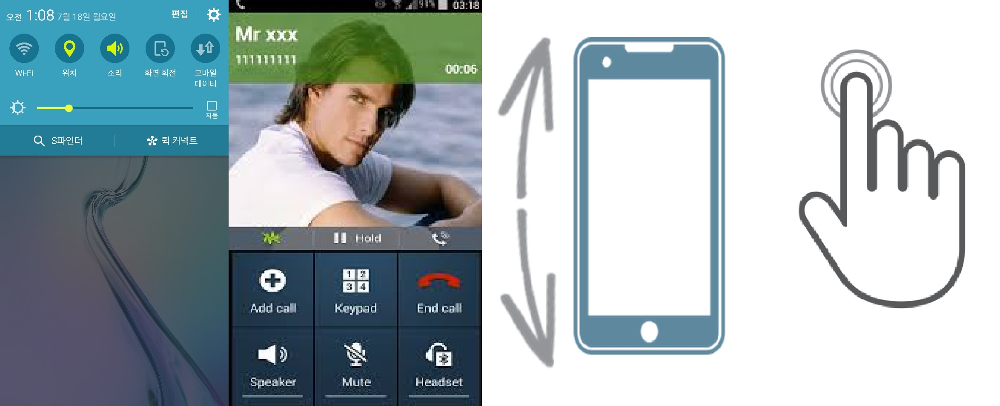
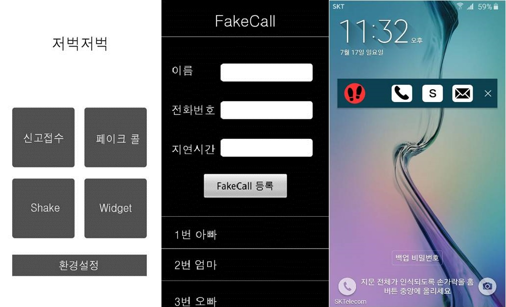

그놈 발소리
긴급연락 어플리케이션
모든 상황 중에서 제일 무서운 상황은 밤 중에 누군가 뒤에서 쫓아오는 느낌이 들때이다.
그리고 그 때 많은 범죄가 일어나기도한다. 위급한 범죄상황에서 신고하기 어려울 경우 신속하게 신고 할 수 있는 서비스입니다.
Read More

프로그램 기능
시스템 구성
Option1.GPS설정 : 번거로운 설정 없이 어플 사용시 자동으로 GPS실행이 가능하다.
Option2.Fake call : 버튼 클릭 시 전화를 가상으로 걸려오게 한다. 귀가 시 누군가와 통화하는 것으로
가장하여 범죄를 예방 할 수 있다.
Option3.Shake and send Message : 음량버튼을 누르면서 동시에 흔들면 특정번호와 112에 문자가 전송된다.
Option4.Widget Touch : 장금 화면에 위젯이 사용되어 잠금 화면을 풀지 않아도 버튼 클릭시 전화가 가거나 위치문자 전송이 가능하다.
Read More

화면 설계
모바일 화면설계
1.메인화면 : 신고접수, Fake call, Shake, Widget 버튼
2.페이크 콜 : 전화오는 사람의 이름, 전화번호 설정이 가능한 버튼
3.위젯 화면 : Fake call, Shake, Message 버튼
Read More